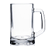

A Brew Day Itinerary

Start Sanitizing Bath #1
-
Summary: Fill up the sanitizing bath with equal parts sanitizer and warm tap water.
-
Note: Everything that touches the brewing ingredients gets sanitized first.
-
- Stir paddle
- Grain bag
- Thermometer
- Brew kettle
- Soup pot
Start Striking Water
-
Summary: Fill up the kettle with water and raise temperature to 158-160 degrees F with the grain bag.
-
- Fill kettle with 5 gallons of tap water.
- Raise temperature to 168-170 degrees F.
- Put grain bag in the kettle.
Mash In
-
Summary: Add the grains mash for one hour.
-
- Poor all grains in the kettle.
- Hold temperature at 150-156 degrees F for one hour.
If starting a Wyeast pack, activate it before the mash out to allow time for it to activate.
Mash Out
-
Summary: Set the stove to high and take the grains out before 180 degrees F.
-
- After one hour of mashing set burner to high.
- Transfer all grains to soup pot before temperature reaches 180 degrees F.
Add DME
-
Summary: Add up to 7lb dry malt extract.
-
Note: This depends on the original gravity you are shooting for.
-
- Add desired amout of DME to the wort.
Sparge
-
Summary: Spray the grains off with hot water to be poured into the kettle to 7 gallon mark.
-
- Sparge grains into the soup pot.
- Carry soup pot with grains in it over to kettle.
- If I'm brewing alone: Hold the grains in one hand and pour sparging water into kettle with the other.
- If I have help: One person holds the grains and the other pours the spage water.
- Fill kettle with spage water to the 7 gallon mark.
Add bittering hops
-
Summary: Add hops right before the boil starts.
-
Note: This is done before the boil to avoid boil overs!
-
- When the temperature reaches 200 degrees F add bittering hops.
- Stir the hops into the wort.
Brew
-
Summary: Brew for 45-90 minutes depending on style adding hops depending on the style.
-
Note: This section is kept brief because it is different for every beer style.
-
- Brew for desired amount of time adding different hops where needed depending on style.
Chill The Wort
-
Summary: Cool the wort down from boiling to less than 80 degrees F.
-
- Empty sanitizer bath.
- Fill bath half way with cold tap water.
- Add approximately 20 lbs. of ice.
- Place the kettle in the ice bath.
Start Sanitizing Bath #2
-
Summary: Fill up the sanitizing bath with equal parts sanitizer and warm tap water.
-
Note: Everything that touches the brewing ingredients gets sanitized first.
-
- Funnel
- Siphon
- Fermenter
- Fermenter lock or bung
- Hydrometer
Transfer Wort to Fermenter
-
Summary: Siphon wort from brew kettle to fermenter through a funnel to catch any hop particles.
-
- Once wort is chilled remove from bath and set on counter.
- Wedge a cutting board under the kettle to point the kettle away from the counter.
- Stir the wort into a whirlpool.
- Wait 10 minutes for hop particles to settle..
- Siphon the wort into the fermenter through the funnel with the screen.
If taking a hydrometer reading, fill hydrometer flask with wort.
If you need to top off wort take reading after topping off.
Top Off Fermenter (if needed)
-
Summary: Add R/O water to wort to approximately 5.5 gallon mark.
-
- If fermenter is below 5.5 gallons top off with reverse osmosis water.
Pitch the Yeast
-
Summary: Add whatever yeast you have prepared for this beer to the wort.
-
- Pour activated yeast into wort through the funnel without the screen.
- Attach the fermenter lock.